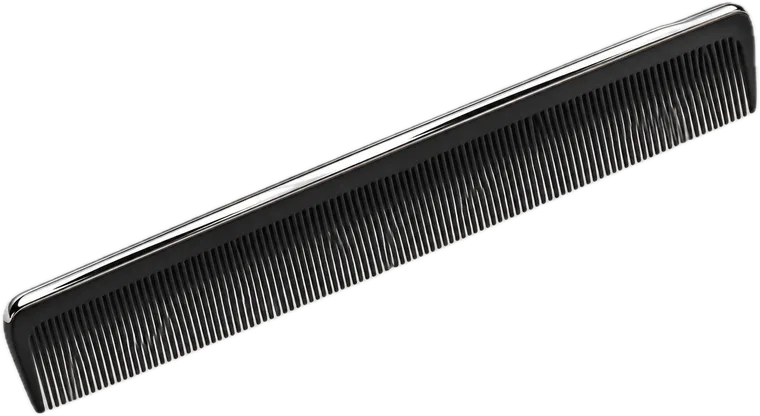
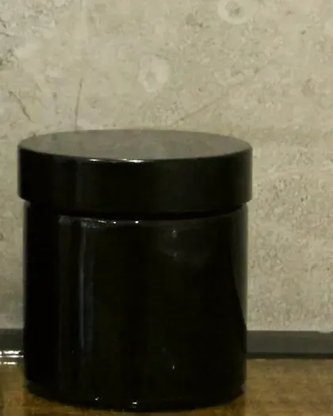
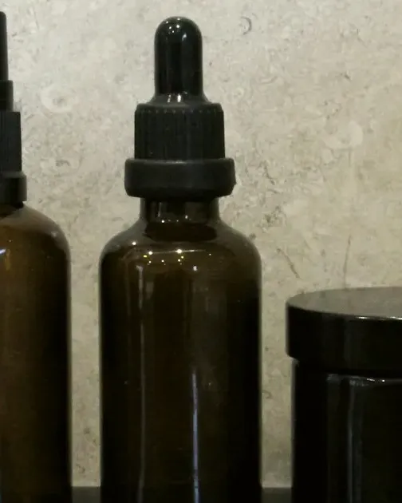
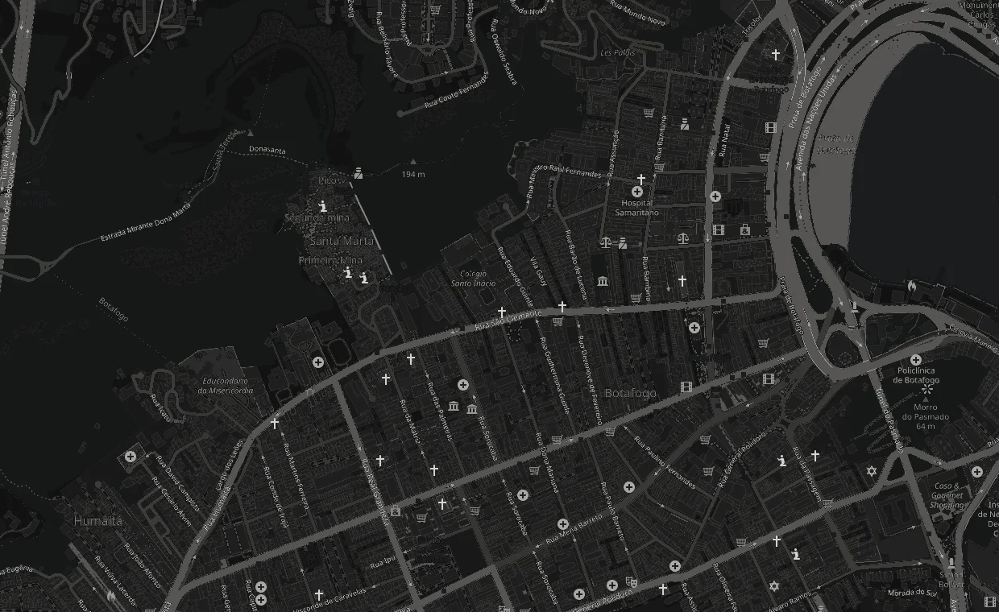

Pezinho
R$ 69/mês
- Dois pezinhos por mês
- 10% em qualquer corte
- Agenda com 14 dias de antecedência
Você economiza R$ 00 por mês

Aberto agora · próxima cadeira 14:40
Degradê, navalha e barba na toalha quente. Agende seu barbeiro em menos de um minuto.
4,9 · 612 avaliações no Google
#0 · Cardápio
O preço já inclui a lavagem, a toalha quente no pescoço e o pezinho na saída. Sem surpresa na cadeira.
Todo serviço termina com o pezinho na navalha · Pix e cartão na cadeira
#1 · Por que agendar aqui
#2 · As cadeiras
Cada barbeiro tem a própria bancada e a própria agenda. Escolha um espelho para acender a luz dele.
#3 · O clube
Um degradê segura umas três semanas. Quem é do clube tem cadeira fixa e paga menos do que avulso.
R$ 69/mês
Você economiza R$ 00 por mês
R$ 149/mês
Você economiza R$ 00 por mês
R$ 289/mês
Você economiza R$ 00 por mês
#4 · A bancada
Leve na hora do corte ou receba em casa no dia seguinte.


Chega por e-mail em um minuto, vale para qualquer serviço ou produto e não vence.
#5 · Dito na cadeira
· 612 avaliações no Google
“O Caio salvou um degradê que outra barbearia destruiu. Marquei o próximo antes de levantar.”
“Agendei à meia-noite, pelo celular, em menos de um minuto. Cheguei e a cadeira estava me esperando.”
“Seu Toninho corta na tesoura como ninguém. Saio com o cabelo que eu pedi.”
“A toalha quente do Davi virou o meu ritual de sexta. Vale o mês inteiro.”
#6 · Onde fica
Sem hora marcada até as 18h

O sinal segura a sua cadeira e sai do valor do corte. Desmarcou até 12 horas antes, ele volta inteiro. Depois disso, ou se você faltar, ele cobre o tempo do barbeiro.
A cadeira fica segurada por 10 minutos. Passou disso, a gente encaixa você no próximo horário livre do mesmo barbeiro.
Um degradê segura umas três semanas. Na confirmação a gente já sugere a data e segura o horário, se você quiser.
Sim, de segunda a sábado até as 18h, por ordem de chegada. Com hora marcada você não espera.
Pix, crédito ou débito, na cadeira. O sinal é pago no agendamento e já vem descontado.